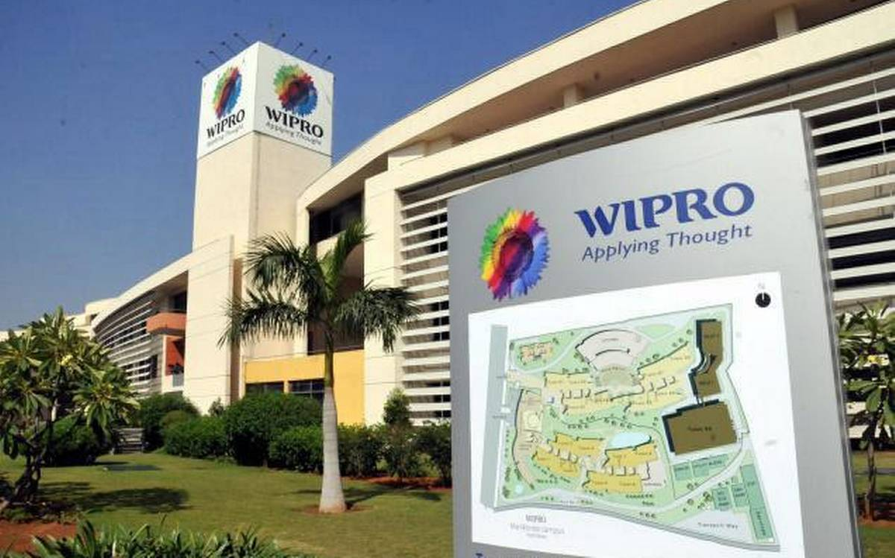
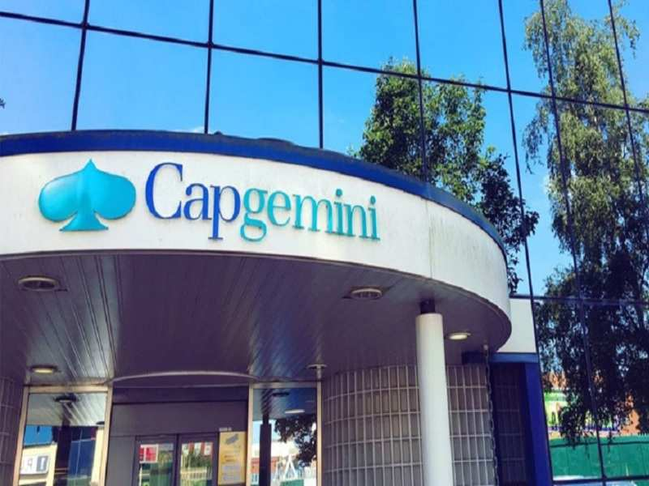
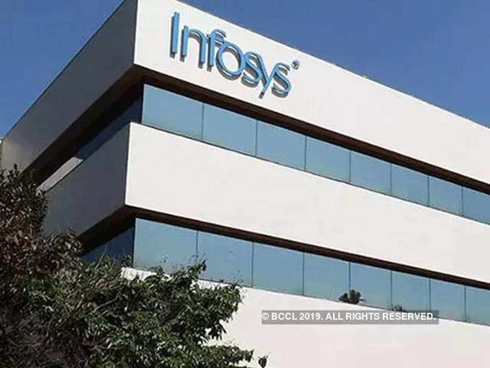

HCL Technologies
HCL Recruitment 2021: Apply Online for HCL Jobs for Engineers,
Trade Apprentices, Junior Engineer, Technical Support Executive etc.
HCL Recruitment provides challenging Platform for Graduates & Freshers.
HCL is a leading software and IT solution development company that is based in India.
When it comes to HCL, the first and foremost type of vacancy that comes to our mind is software jobs.
But, the vacancies in HCL are far more versatile than that.
Get in touch with the career section of HCL official site to know about the current job vacancies and other details.
After successful registration, the selection team would shortlist the candidates based on the basic requirements.
The basic requirements for HCL software testing jobs would not be the same for other positions. Thus, get to know about the requirements before applying for the job. The candidates would be contacted by the selection team and in some cases a telephonic interview would be conducted which tests the management skills and technical skills of the candidates.
Wipro

WIPRO Recruitment 2021: Latest Wipro jobs & careers for freshers & experience graduates.The site provides details about the selection process,criteria,job description,application method,interview dates,materials other upcoming details of Wipro recruitment.Wipro careers for Freshers & Experienced graduates: Apply Online for Latest Wipro Jobs through Freshersworld. Wipro is an Indian IT consulting company that provides system integration services and solutions. When the company is looking for candidates, it would use all kinds of portals and boards to find the suitable resume. The recruitment process for Wipro jobs varies from one center to another.Once the candidate’s profile is obtained through any source, the shortlisting process starts. Those who are shortlisted would be called for the interview process. There would be two types of interview; one for technical assessment and the other is functional interview. Those who are selected would be called for document verification and background verification. On successful completion of verification, the candidate would be placed in an induction program.
Capgemini

Capgemini Recruitment 2021: Capgemini is a consulting company that provides outsourcing and technology services to other companies. The Capgemini jobs are notified in detail in the official site. One can log into the official site, search for a specific position and learn whether there is a vacancy or not. On the other hand, the candidates can search for recruitment events within a start and end date. The candidates who want to register their profiles can submit their resume and other details in the official site and the selection team would get in touch with the candidates whenever there is a need. The Capgemini jobs for freshers are available in management, programming, production, finance, HR, data management, software, infrastructure, consultancy, BPO and KPO. The company has an open requirement for MBA and technology freshers. Thus, the engineering and management candidates can submit their resumes whenever they want. For the current jobs in Capgemini, the candidates can visit the career page of the official site, FaceBook page of the company, LinkedIn group or Twitter.
Infosys

Infosys Recruitment 2021 (Jobs, Vacancies): Upcoming Infosys jobs.The site acts as an employment portal and provides all the current admin, non-IT and IT jobs in Infosys. Infosys is a business technology consulting company that provides IT services and solutions. Infosys is a business technology consulting company that provides IT services and solutions. The Infosys job openings are available for both freshers and experienced candidates. The candidates are selected both through campus recruitment and also through direct recruitment process. The company uses a lot of channels to recruit candidates. The selection process for campus interview and also for all the Infosys jobs for freshers involves the following steps. The candidates are subjected through a written test consisting of aptitude test, statement problems and verbal tests. Those who are selected in the written test would be called in for the HR interview round which is non-technical. The Infosys recruitment process happens two times a year for most of the positions.
TCS
TCS Recruitment 2021: Apply Online for TCS Jobs for Trade Apprentices,Junior Engineer,Technical Support Executive etc. TCS Recruitment provides challenging Platform for Graduates & Freshers. TCS is an IT consulting company that provides IT services and business solutions to global businesses. Tata Consultancy Services recruits both freshers and experienced candidates, not just for IT jobs, but in various other departments. When it comes to the selection process, the candidates have to take up a written test that includes questions about verbal ability, aptitude and reasoning. Those who are selected in the written test would be subjected to a technical interview process.
Cognizant
Cognizant (CTS) Recruitment 2021 (Careers, Jobs Vacancies): Apply online & explore Cognizant (CTS) careers in IT opportunities, technical jobs, software jobs . Register today and get hired through Freshersworld. Cognizant is a business consulting, information technology, enterprise application and infrastructure solution provider. When it comes to CTS jobs, the candidates are selected through direct competition, employee referral, promotion and campus recruitment. For CTS freshers jobs, the candidates would be filled through campus drives and direct competition. For campus drives, the candidates would be provided a PPT about the company, initially. Later, the candidates would be subjected to aptitude test. Those who are selected in the aptitude test would be subjected to group discussion or any other level that assesses the communication skill of the candidate. Those who are shortlisted would be called in for the technical interview round and HR interview round. If you are looking for Cognizant job openings, you need to get in touch with the official site to learn about the current vacancies.
Accenture

Accenture (NYSE: ACN) is a leading global professional services company, providing a broad range of services and solutions in strategy, consulting, digital, technology and operations. Combining unmatched experience and specialized skills across more than 40 industries and all business functions — underpinned by the world’s largest delivery network — Accenture works at the intersection of business and technology to help clients improve their performance and create sustainable value for their stakeholders. With approximately 477,000people serving clients in more than 120 countries, Accenture drives innovation to improve the way the world works and lives.